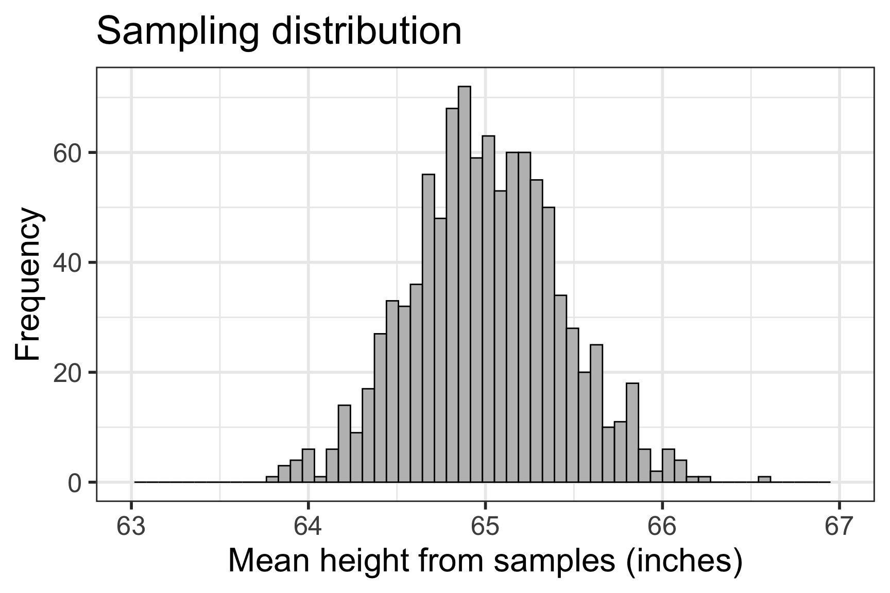
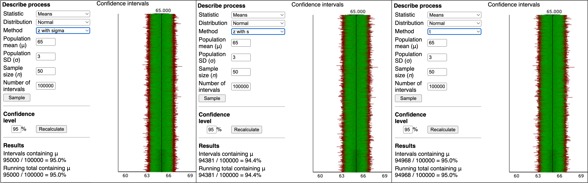

Lesson 10: Confidence intervals
TB sections 4.2
Meike Niederhausen and Nicky Wakim
2024-11-04
Where are we?

Learning Objectives
- Calculate a confidence interval when we know the population standard deviation
- Interpret a confidence interval when we know the population standard deviation
- Calculate and interpret a confidence interval using the t-distribution when we do not know the population standard deviation
Learning Objectives
- Calculate a confidence interval when we know the population standard deviation
- Interpret a confidence interval when we know the population standard deviation
- Calculate and interpret a confidence interval using the t-distribution when we do not know the population standard deviation
Last time: Central Limit Theorem applied to sampling distribution
- CLT tells us that we can model the sampling distribution of mean heights using a normal distribution
\[\overline{X} \sim \text{Normal}\big(\mu_{\overline{X}}=65, SE = 0.424 \big)\]
Last time: Sampling Distribution of Sample Means (with the CLT)
The sampling distribution is the distribution of sample means calculated from repeated random samples of the same size from the same population
It is useful to think of a particular sample statistic as being drawn from a sampling distribution
- So the red sample with \(\overline{x} = 65.1\) is just one sample mean in the sampling distribution
With CLT and \(\overline{X}\) as the RV for the sampling distribution
- Theoretically (using only population values): \(\overline{X} \sim \text{Normal} \big(\mu_{\overline{X}} = \mu, \sigma_{\overline{X}}= SE = \frac{\sigma}{\sqrt{n}} \big)\)
- In real use (using sample values for SE): \(\overline{X} \sim \text{Normal} \big(\mu_{\overline{X}} = \mu, \sigma_{\overline{X}}= SE = \frac{s}{\sqrt{n}} \big)\)
\[ \mu_{\overline{X}} = 65 \text{ inches}\] \[ SE = 0.424 \text{ inches}\]
Last time: point estimates
This time: Interval estimates of population parameter
A point estimate consists of a single value
An interval estimate provides a plausible range of values for a parameter
- Remember: parameters are from the population and estimates are from our sample
We can create a plausible range of values for a population mean (\(\mu\)) from a sample’s mean \(\overline{x}\)
A confidence interval gives us a plausible range for \(\mu\)
Confidence intervals take the general form: \[\big(\overline{x} - m, \overline{x} + m \big) = \overline{x} \pm m\]
- Where \(m\) is the margin of error
Point estimates with their confidence intervals for \(\mu\)
Do these confidence intervals include \(\mu\)?
Poll Everywhere Question 1
Confidence interval (CI) for the mean \(\mu\)
Confidence interval for \(\mu\)
\[\overline{x}\ \pm\ z^*\times \text{SE}\]
- with \(\text{SE} = \frac{\sigma}{\sqrt{n}}\) if population sd is known
When can this be applied?
- When CLT can be applied!
- When we know the population standard deviation!
- \(z^*\) depends on the confidence level
- For a 95% CI, \(z^*\) is chosen such that 95% of the standard normal curve is between \(-z^*\) and \(z^*\)
- This corresponds to \(z^* = 1.96\) for a 95% CI
- We can use
Rto calculate \(z^*\) for any desired CI - Below is how we calculate \(z^*\) for the 95% CI
Example: CI for mean height \(\mu\) with \(\sigma\)
Example 1: Using our green sample from previous plots
For a random sample of 50 people, the mean height is 66.1 inches. Assume the population standard deviation is 3 inches. Find the 95% confidence interval for the population mean.
\[ \begin{aligned} \overline{x} \pm \ & z^* \times \text{SE} \\ \overline{x} \pm \ & z^* \times \dfrac{\sigma}{\sqrt{n}} \\ 66.1 \pm \ & 1.96 \times \dfrac{3}{\sqrt{50}} \\ 66.1 \pm \ & 0.8315576 \\ (66.1 - 0.8315576, & \ 66.1 + 0.8315576)\\ (65.268, & \ 66.932)\\ \end{aligned} \]
We are 95% confident that the mean height is between 65.268 and 66.932 inches.
Learning Objectives
- Calculate a confidence interval when we know the population standard deviation
- Interpret a confidence interval when we know the population standard deviation
- Calculate and interpret a confidence interval using the t-distribution when we do not know the population standard deviation
How do we interpret confidence intervals? (1/2)
Simulating Confidence Intervals: http://www.rossmanchance.com/applets/ConfSim.html
The figure shows CI’s from 100 simulations:
- The true value of \(\mu =65\) is the vertical black line
- The horizontal lines are 95% CI’s from 100 samples
- Blue: the CI “captured” the true value of \(\mu\)
- Red: the CI did not “capture” the true value of \(\mu\)
What percent of CI’s captured the true value of \(\mu\)?
How do we interpret confidence intervals? (2/2)
Actual interpretation:
- If we were to
- repeatedly take random samples from a population and
- calculate a 95% CI for each random sample,
- then we would expect 95% of our CI’s to contain the true population parameter \(\mu\).
What we typically write as “shorthand”:
- In general form: We are 95% confident that (the 95% confidence interval) captures the value of the population parameter.
WRONG interpretation:
- There is a 95% chance that (the 95% confidence interval) captures the value of the population parameter.
- For one CI on its own, it either does or doesn’t contain the population parameter with probability 0 or 1. We just don’t know which!
Poll Everywhere Question 2
Learning Objectives
- Calculate a confidence interval when we know the population standard deviation
- Interpret a confidence interval when we know the population standard deviation
- Calculate and interpret a confidence interval using the t-distribution when we do not know the population standard deviation
What if we don’t know \(\sigma\) ? (1/2)
Simulating Confidence Intervals: http://www.rossmanchance.com/applets/ConfSim.html
- The normal distribution doesn’t have a 95% “coverage rate” when using \(s\) instead of \(\sigma\)
- There’s another distribution, called the t-distribution, that does have a 95% “coverage rate” when we use \(s\)
Poll Everywhere Question 3
What if we don’t know \(\sigma\) ? (2/2)
In real life, we don’t know what the population sd is ( \(\sigma\) )
If we replace \(\sigma\) with \(s\) in the SE formula, we add in additional variability to the SE! \[\frac{\sigma}{\sqrt{n}} ~~~~\textrm{vs.} ~~~~ \frac{s}{\sqrt{n}}\]
Thus when using \(s\) instead of \(\sigma\) when calculating the SE, we need a different probability distribution with thicker tails than the normal distribution.
- In practice this will mean using a different value than 1.96 when calculating the CI
Instead, we use the Student’s t-distribution
Student’s t-distribution
- Is bell shaped and symmetric
- A “generalized” version of the normal distribution
- Its tails are a thicker than that of a normal distribution
- The “thickness” depends on its degrees of freedom: \(df = n–1\) , where n = sample size
- As the degrees of freedom (sample size) increase,
- the tails are less thick, and
- the t-distribution is more like a normal distribution
- in theory, with an infinite sample size the t-distribution is a normal distribution.
Confidence interval (CI) for the mean \(\mu\)
Confidence interval for \(\mu\)
\[\overline{x}\ \pm\ t^*\times \text{SE}\]
- with \(\text{SE} = \frac{s}{\sqrt{n}}\) if population sd is not known
When can this be applied?
- When CLT can be applied!
- When we do not know the population standard deviation!
- \(t^*\) depends on the confidence level and degrees of freedom
- degrees of freedom (df) is: \(df=n-1\) (n is number of observations in sample)
qtgives the quartiles for a t-distribution. Need to specify- the percent under the curve to the left of the quartile
- the degrees of freedom = \(n-1\)
- Note in the R output to the right that \(t^*\) gets closer to 1.96 as the sample size increases
Example: CI for mean height \(\mu\) with \(s\)
Example 2: Using our green sample from previous plots
For a random sample of 50 people, the mean height is 66.1 inches and the standard deviation is 3.5 inches. Find the 95% confidence interval for the population mean.
\[ \begin{aligned} \overline{x} \pm \ & t^* \times \text{SE} \\ \overline{x} \pm \ & t^* \times \dfrac{s}{\sqrt{n}} \\ 66.1 \pm \ & 2.0096 \times \dfrac{3.5}{\sqrt{50}} \\ 66.1 \pm \ & 0.994689 \\ (66.1 - 0.994689, & \ 66.1 + 0.994689)\\ (65.105, & \ 67.095)\\ \end{aligned} \]
What is \(t^*\)? \[df = n-1 = 50-1=49\] \(t^* =\) qt(p = 0.975, df = 49) \(= 2.0096\)
We are 95% confident that the mean height is between 65.105 and 67.095 inches.
Confidence interval (CI) for the mean \(\mu\) (\(z\) vs. \(t\))
- In summary, we have two cases that lead to different ways to calculate the confidence interval
Case 1: We know the population standard deviation
\[\overline{x}\ \pm\ z^*\times \text{SE}\]
- with \(\text{SE} = \frac{\sigma}{\sqrt{n}}\) and \(\sigma\) is the population standard deviation
- For 95% CI, we use:
- \(z^* =\)
qnorm(p = 0.975)\(=1.96\)
- \(z^* =\)
Case 2: We do not know the population sd
\[\overline{x}\ \pm\ t^*\times \text{SE}\]
- with \(\text{SE} = \frac{s}{\sqrt{n}}\) and \(s\) is the sample standard deviation
- For 95% CI, we use:
- \(t^* =\)
qt(p = 0.975, df = n-1)
- \(t^* =\)
Some final words (said slightly differently?)
- Rule of thumb:
- Use normal distribution ONLY if you know the population standard deviation \(\sigma\)
- If using \(s\) for the \(SE\), then use the Student’s t-distribution
- For either case, we need to remember when we can calculate the confidence interval:
- \(n \geq 30\) and population distribution not strongly skewed (using Central Limit Theorem)
- If there is skew or some large outliers, then \(n \geq 50\) gives better estimates
- \(n < 30\) and data approximately symmetric with no large outliers
- \(n \geq 30\) and population distribution not strongly skewed (using Central Limit Theorem)
- If do not know population distribution, then check the distribution of the data.
- Aka, use what we learned in datavisualization to see what the data look like
Lesson 10 Slides